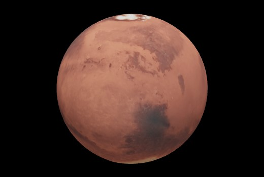

Mars, Dünya’nın yarısı kadar olan soğuk bir çöl gezegenidir. Toprağında bulunan demirden dolayı kırmızı gözükür ve bu sebeple “Kırmızı Gezegen” olarak da adlandırılır. Dünya gibi Mars’ın mevsimleri, kutupları, volkanları, kanyonları ve hava olayları vardır. Atmosferi çok incedir. Karbon dioksit, nitrojen ve argondan meydana gelir.
Mars, Dünya’nın yarısı kadar olan soğuk bir çöl gezegenidir. Toprağında bulunan demirden dolayı kırmızı gözükür ve bu sebeple “Kırmızı Gezegen” olarak da adlandırılır. Dünya gibi Mars’ın mevsimleri, kutupları, volkanları, kanyonları ve hava olayları vardır. Atmosferi çok incedir. Karbon dioksit, nitrojen ve argondan meydana gelir.
Mars'ın 60.000 yıl içersinde en yakın geçtiği zamanda Hubble Teleskopu tarafından çekilen fotoğraf (Kaynak:NASA)